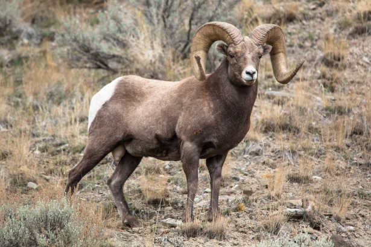

<!DOCTYPE html>
<html lang="en">
  <head>
    <meta charset="UTF-8" />
    <meta http-equiv="X-UA-Compatible" content="IE=edge" />
    <meta name="viewport" content="width=device-width, initial-scale=1.0" />
    <link rel="stylesheet" href="styles/blog.css" />
    <title>Whitewater Rafting Vacations | Dry Oar Boating | Home</title>
  </head>
  <body></body>
</html>
<body>
  <div id="content">
    <header>
      <a id="logo_link" href="index.html">
        
      </a>
      <nav>
        <a href="index.html">Home</a>
        <a href="blog.html">Our Blog</a>
        <a href="site-plan.html">White Water Rafting Siteplan</a>
        <a href="contactus.html">Contact Us</a>
      </nav>
    </header>
    <div id="hero">
      <div id="hero-box">
        
      </div>
      <section id="hero-msg">
        <h1 class="home-title">Welcome to the Rapids!</h1>
        <h4 class="home-msg">See what we've been up to here at DryOar!</h4>
      </section>
    </div>
    <main class="info-cards">
      <div class="background">
        <section class="sheep-card">
          
          <p class="article">
            Big horn sheep: For many people, bighorn sheep symbolize the rugged
            mountain west. It is one of two species of wild sheep in North
            America. It’s compact body is muscular with chocolate brown fur.
            Most weigh 160-250 lbs. They have exceptional vision, hearing and
            smell that helps them detect and avoid predators.
          </p>
          <p class="article">
            Their large curved horns can weigh up to 30 lbs. Females also have
            horns but they are short with a slight curvature. Horns are used as
            tools for eating and fighting.
          </p>
          <p class="article">
            If you encounter a big horn sheep, don’t agitate it. The park
            service asks that you stay 100 feet away from big game animals.
            Leave them enough room for escape if they feel threatened.
          </p>
        </section>
      </div>
      <div class="background">
        <section class="scorpion-card">
          
          <p class="article">
            Scorpions: There are hundreds of varieties of scorpions, most of
            them being harmless. There are, however, a handful of them that can
            be dangerous and even potentially lethal. Scorpions can be found in
            almost every ecosystem and are very adaptable to their environment.
            The scorpion that calls Phantom Ranch in the Grand Canyon home is
            the Bark Scorpion, the most venomous in the United States. Do not
            worry though, the bark scorpions are only lethal to their prey and
            luckily humans are not on that list!
          </p>
          <p class="article">
            They spend the day hiding and crawl out at night to hunt. They will
            eat crickets, moths, spiders and other insects. Many compare their
            sting to an intense bee sting. Relief can be found with ice, aspirin
            and time.
          </p>
          <p class="article">
            When in the canyon, pay attention to where you are walking at night.
            Always wear your shoes or sandals. Always have a light with you to
            see where you are going. Never try to capture a scorpion and if you
            get stung, see your guide immediately.
          </p>
        </section>
      </div>
    </main>
    <footer>
      <p>Dry Oar &copy; 2023 - James Emerick</p>
      <p><a href="site-plan.html">Site Plan</a></p>
      <p><a href="contactus.html">Contact Us</a></p>
      <div class="social">
        <a target="_blank" href="https://facebook.com">
          
        </a>
        <a target="_blank" href="https://twitter.com">
          
        </a>
        <a target="_blank" href="https://instagram.com">
          
        </a>
      </div>
    </footer>
  </div>
</body>
